Some monsters can spawn as a Champion which deviates in coloration and size. The champion's coloration/size denotes which peculiar behaviors and traits it will exhibit. Champions will generally drop a pickup (coinciding with the color of the champion) when killed on normal difficulty. However, in hard mode, the drop rate is reduced to 33%, while in Greed Mode, champions won't drop pickups at all.
Most champions have a visual 15% size increase, inflict full heart damage regardless of chapter, and have double the health of a normal monster. Champions are generally regarded as more dangerous than common monsters.
 Champions always deal contact damage, regardless of what monster they are (e.g. a common Mulligan will not deal contact damage, but champion versions will).
Champions always deal contact damage, regardless of what monster they are (e.g. a common Mulligan will not deal contact damage, but champion versions will).
The identifying scheme for champion qualities is as follows:
| ID | Appearance | Effect | Drop | Rarity | Notes |
|---|---|---|---|---|---|
| 0 | ×2.6 amount of HP. | Common | |||
| 1 |
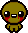 |
Increased movement speed.
|
Common |
| |
| 2 |
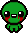 |
Leaves Green Creep as it walks. | Common | ||
| 3 |
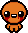 |
Attacks cause you to drop pennies (like Greed or a The number of pennies dropped range from 1-3, which take away 2-4 pennies in total respectively. No pennies are dropped if you don't have any. |
1-3 Coins
|
Around 2× rarer than common champions. | |
| 4 |
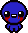 |
Decreased speed. | 3 Blue Flies | Around 2× rarer than common champions. | |
| 5 |
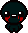 |
Explodes when killed. | Common | ||
| 6 | Invincible until all other enemies are killed.
If there is more than one invincible champion in the room, they ignore themselves in order to prevent a softlock. |
Around 10× rarer than common champions. | Doesn't appear until entering | ||
| 7 |
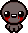 |
2/3 health, decreased speed. | Common | ||
| 8 | Tears become spectral tears, and it can move past environmental obstacles (such as pits) that it otherwise couldn't when forced. |
|
Around 10× rarer than common champions. | Doesn't appear until entering | |
| 9 | Fades in and out of visibility, like a Null. | Around 10× rarer than common champions. | Doesn't appear until entering | ||
| 10 |
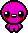 |
Periodically shoots short-ranged blood shots, similar to Gushers. | Nothing | Common | |
| 11 | Pulls Isaac and his shots towards itself, like a Gaping Maw. | Random trinket | Around 10× rarer than common champions. | Doesn't appear until entering | |
| 12 |
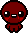 |
Collapses into a flesh pile upon death and regenerates if not finished off (like a Globin). | Around 2× rarer than common champions. | ||
| 13 |
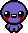 |
Releases blood shots in 8 directions when killed. | 1/2 heart | Common | |
| 14 | The enemy blends into the background and briefly becomes visible when damaged. |
Rune or a random card if runes/soul stones haven't been unlocked. |
Around 4× rarer than common champions. | ||
| 15 |
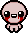 |
Splits into two copies of itself upon death. | 2 normal versions of itself | Around 4× rarer than common champions. | |
| 16 | Repels Isaac's shots when it pulses. | Nothing | Around 4× rarer than common champions. | ||
| 17 |
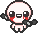 |
Has 1-2 Eternal Flies circling it. Spawns another fly upon death. | Around 4× rarer than common champions. | ||
| 18 |
|
2/3 health, increased speed and pitch of sound effects. 50% smaller both visually and collision-wise, making them more difficult to hit. |
One Makes You Small pill at 1/5th of difficulty-based drop rate. |
Around 4× rarer than common champions. | Using the pill dropped will change all other pills matching its color into One Makes You Small pills. |
| 19 |
|
3× health, slightly decreased speed and decreased pitch of sound effects. Visually 50% larger, though collision remains the same. Deals two full hearts of damage. |
One Makes You Larger pill at 1/5th of difficulty-based drop rate. |
Around 4× rarer than common champions. | Using the pill dropped will change all other pills matching its color into One Makes You Larger pills. |
| 20 | All other enemies in the room regenerate health at the rate of 20 HP per second while this enemy is alive.
Other healing champions in the room cannot be healed.
|
Around 10× rarer than common champions. | Doesn't appear until entering | ||
| 21 | Spawns an Attack Fly on hit. After each hit, there is a delay until the next hit results in another Attack Fly. A single Pulsating enemy can have up to 5 Attack Flies at once. | 4-6 Blue Flies | Around 10× rarer than common champions. | Doesn't appear until entering | |
| 22 |
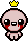 |
6× health. All enemies in the room that are not champions will turn yellow while the crowned enemy is alive. The affected enemies will drop batteries like yellow champions upon dying, but otherwise have no extra health, speed, or damage. | 2-3 random pickups | Around 10× rarer than common champions.
More common in The Void |
Doesn't appear until entering |
| 23 |
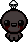 |
Produces a The Necronomicon effect upon death. Deals two full hearts of damage. |
The Necronomicon effect |
Around 10× rarer than common champions. | Doesn't appear until entering |
| 24 |
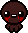 |
Trails poop behind it as it walks.
The poop cannot drop any pickups. |
Nothing | Incredibly rare.
~100× rarer than common champions. |
Doesn't appear until entering |
| 25 |
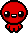 |
Combines the effects of multiple champion types.
|
A coin, a bomb, a key, a heart, a pill, a card, and a trinket. |
Incredibly rare. ~100× rarer than common champions. |
Doesn't appear until entering |

The chances for Champion monsters to appear are noted in the table below:
| Modifiers | Normal mode |
|
|
|---|---|---|---|
| Base chance | 5% | 20% | 75% |
| 20% | 35% | 75% | |
| 10% | 40% | 100% | |
| 20% | 80% | 100% | |
| 30% | N/A | 100% | |
| 40% | 70% | 100% | |
|
Champion Belt + Purple Heart + |
80% | 100% | 100% |
| 100% | N/A | 100% |
Champion Belt adds 15% to the base champion chance. This has no effect in 
 The Void.
The Void.
- Purple Heart doubles the champion chance, and stacks with Champion's Belt.
- Each copy of Purple Heart adds 2 to the multiplier (e.g. 6× with 3 Purple Hearts, 20× with 10 Purple Hearts).

 Mom's Box and
Mom's Box and  Golden Purple Heart count as 1 extra copy.
Golden Purple Heart count as 1 extra copy.
- Each copy of Purple Heart adds 2 to the multiplier (e.g. 6× with 3 Purple Hearts, 20× with 10 Purple Hearts).
 Holding multiple Purple Hearts doesn't increase champion chance. Only Mom's Box increases Purple Heart's multiplier.
Holding multiple Purple Hearts doesn't increase champion chance. Only Mom's Box increases Purple Heart's multiplier.
Champion Enemies
- The
.png) Angelic Baby (small),
Angelic Baby (small),  Eternal Fly Bombs, the bones thrown by a
Eternal Fly Bombs, the bones thrown by a  Big Bony,
Big Bony,  Festering Guts,
Festering Guts,  Exorcists,
Exorcists,  Fanatics,
Fanatics,  Fetal Demons, and the shadow Chargers spawned by
Fetal Demons, and the shadow Chargers spawned by  My Shadow are flagged to be able to spawn as Champions, but this is impossible to see without mods, as they aren't placed in any room layouts normally.
My Shadow are flagged to be able to spawn as Champions, but this is impossible to see without mods, as they aren't placed in any room layouts normally.
Champion Bosses
Bosses are also capable of being champions, but these work much differently from regular monsters as champions. Every champion boss is unique, with individualized adjustments to the attacks and AI of the boss in question, usually specializing in certain aspects of the boss's repertoire to make them harder to deal with. A champion boss may or may not have increased or decreased health, speed, and/or size in comparison to the default version of the boss, depending on the champion in question. Champion bosses are usually not strictly stronger than the default versions of the bosses, having trade-offs with certain stats being lowered and/or certain attacks being weaker or outright inaccessible in exchange for other stats and/or attacks being stronger.
Because every champion boss is unique, the following table contains a brief summation of how they differ from the default bosses. Additional details (including any changes to the differences in versions prior to Repentance) can be found in the pages for each individual boss.
| Boss | Champion | Entity ID | Champion Differences |
|---|---|---|---|
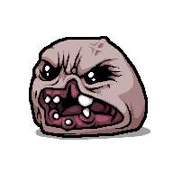 |
Grey |
20.0.1 |
|
Red |
20.0.2 |
| |
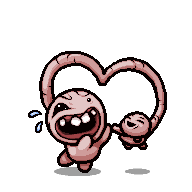 |
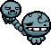 Blue |
79.0.1 |
|
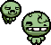 Green |
79.0.2 | ||
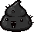
|
261.0.1 | ||
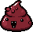
|
261.0.2 |
| |
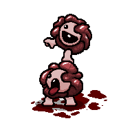 |
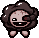
|
237.1.1 |
|
|
237.1.2 |
| |
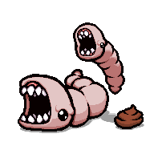 |
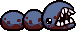 Blue |
19.0.1 |
|
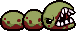 Green |
19.0.2 |
| |
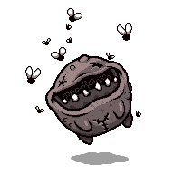 |
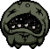 Green |
67.0.1 |
|
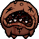 Orange |
67.0.2 |
| |
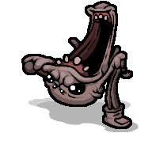 |
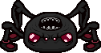 Black |
100.0.1 |
|
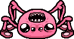 Pink |
100.0.2 |
| |
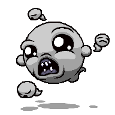 |
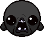
|
260.0.1 |
|
|
260.0.2 |
| |
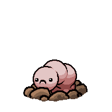 |
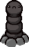
|
62.0.1 |
|
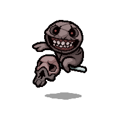 |
Blue Blue |
63.0.1 |
|
|
404.0.1 |
| |
|
404.0.2 |
| |
|
405.0.1 | ||
|
405.0.2 |
| |
Grey Grey Grey |
71.0.1 |
| |
Blue |
28.0.1 |
| |
Orange |
28.0.2 |
| |
Green |
36.0.1 |
| |
|
264.0.1 | ||
|
264.0.2 |
| |
|
262.0.1 | ||
|
262.0.2 |
| |
Blue |
99.0.1 |
| |
Yellow |
99.0.2 |
| |
Cyan |
68.0.1 |
| |
Yellow |
68.0.2 |
| |
Black |
67.1.1 |
| |
Red |
67.1.2 |
| |
Black |
19.1.1 |
| |
Yellow |
19.1.2 |
| |
Green |
19.1.3 |
| |
Pink |
28.2.2 | ||
|
269.0.1 |
| |
|
269.0.2 |
| |
Grey Grey |
64.0.1 |
| |
|
401.0.1 |
| |
|
62.2.1 |
| |
|
403.0.1 |
| |
Red |
43.0.1 |
| |
|
265.0.1 |
| |
|
265.0.2 |
| |
|
263.0.1 |
| |
|
263.0.2 |
| |
Green |
68.1.1 |
| |
Black |
97.0.1 |
| |
Grey Grey |
65.0.1 |
| |
|
402.0.1 |
| |
Blue |
45.0.1 |
| |
Red |
45.0.2 |
| |
Black Black |
66.0.1 |
|


| The following bosses have no Champion versions and cannot spawn as Champions under any circumstances: |
|---|
|
Notes
- ↑ The version of Mom fought in
 Mausoleum II/
Mausoleum II/  Gehenna II is not considered a Champion version and is not described here. (In fact, Mom cannot spawn as a Champion in Mausoleum or Gehenna.)
Gehenna II is not considered a Champion version and is not described here. (In fact, Mom cannot spawn as a Champion in Mausoleum or Gehenna.)
- ↑ Scolex actually does have a champion version (specifically a black version) that is 15% larger, 15% slower, and has 25% more HP (300 → 375), but it is hard-coded to never spawn in Repentance.
- ↑ The version of Mom's Heart fought in Mausoleum II/ Gehenna II with the Knife Pieces is not considered a Champion version and is not described here.
Bugs
Gallery
-
Concept art for the champion versions of the
 Nest.
Nest.